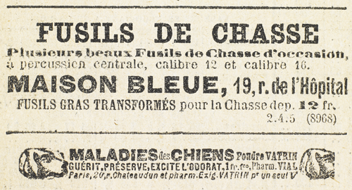

Joséphine Balsamo ne bougeait pas. Raoul remarqua sa figure décomposée que l’angoisse contractait et vieillissait.
Il lui dit :
– Vite ! il faut que vous changiez de vêtements. Mettez une de vos autres robes… une noire de préférence.
Il retourna vers la fenêtre, d’où il vit au-dessous de lui les policiers et les gendarmes qui s’entretenaient dans le jardin. Quand elle eut fini de s’habiller, il saisit la robe grise qu’elle venait de quitter et s’en revêtit. Il était mince, de taille svelte : la robe dont il baissa la jupe afin de recouvrir ses pieds lui allait à merveille, et il semblait si ravi de ce déguisement et si tranquille, que la jeune femme parut se rassurer.
– Écoutez-les, dit-il.
On distinguait nettement la conversation que tenaient les quatre hommes au seuil de la salle, et ils entendirent l’un d’eux – un des gendarmes sans doute – qui demandait d’une grosse voix traînante :
– Vous êtes bien certains qu’elle habitait là, à l’occasion ?
– Sûrs et certains. La preuve… deux de ses malles qu’elle y a laissées en dépôt, et dont l’une porte son nom : Madame Pellegrini. Et puis, la mère Vasseur est une brave femme, n’est-ce pas ?
– Plus brave que la mère Vasseur, il n’y en a pas ; on la connaît dans toute la région !
– Eh bien ! la mère Vasseur déclare que cette darne Pellegrini venait de temps à autre passer quelques jours chez elle.
– Parbleu ! entre deux coups de cambriole.
– Tout juste.
– Alors ce serait une bonne capture que la dame Pellegrini ?
– Excellente. Vols qualifiés. Escroqueries. Recel. Bref tout le diable et son train… sans compter des tas de complices.
– On a son signalement ?
– Oui et non.
– On a deux portraits qui sont tout différents. L’un d’eux est jeune, l’autre vieux. Quant à l’âge, c’est marqué entre trente et soixante.
Ils éclatèrent de rire, puis la grosse voix reprit :
– Mais vous êtes sur la piste ?
– Oui et non. Il y a quinze jours elle opérait à Rouen et à Dieppe. Là on perd sa trace. On la retrouve sur la grande ligne du chemin de fer, et on la perd de nouveau. A-t-elle continué vers Le Havre ou bifurqué vers Fécamp ? Impossible de le savoir. Disparition totale. Nous pataugeons.
– Et ici, pourquoi êtes-vous venus ?
– Le hasard. Un employé de la gare, qui avait roulotté jusque-là, s’est souvenu de ce nom de Pellegrini, inscrit sur l’une d’elles à un endroit caché par une étiquette qui s’était décollée.
– Vous avez interrogé d’autres voyageurs, des clients de l’auberge ?
– Oh ! les clients sont rares ici.
– Il y a toujours bien une dame que nous avons avisée tout à l’heure en arrivant.
– Une dame ?
– Pas d’erreur. Nous étions encore à cheval quand elle est sortie de la maison, par cette porte. Même qu’elle y est rentrée d’un coup comme si elle ne voulait pas être vue.
– Impossible ! … une dame dans l’auberge ?…
– Une particulière en gris. Pour ce qui serait de la reconnaître, non. Mais la couleur de la robe, oui… Et le chapeau aussi… un chapeau avec des fleurs violettes…
Les quatre hommes se turent.
Toute cette conversation, Raoul et la jeune femme l’avaient écoutée sans un mot, les yeux dans les yeux. À chaque preuve nouvelle, le visage de Raoul devenait plus dur. Elle, pas une fois, ne protesta.
– Ils viennent… ils viennent… prononça-t-elle sourdement.
– Oui, dit-il. C’est le moment d’agir… Sinon, ils montent et vous trouvent dans cette chambre.
Elle avait gardé son chapeau. Il le lui enleva et s’en coiffa, rabattant un peu les ailes pour bien dégager les fleurs violettes, et nouant les brides autour de son cou, ce qui lui masquait le visage. Puis il donna ses dernières instructions.
– Je vais vous ouvrir le chemin. Dès qu’il sera libre, vous vous en irez tranquillement par la route jusqu’à la cour de ferme où votre voiture est garée. Prenez-y place, et que Léonard ait les guides en main…
– Et vous ? dit-elle.
– Je vous rejoins dans vingt minutes.
– S’ils vous arrêtent ?
– Ils ne m’arrêteront pas, et vous non plus. Mais pas de précipitation. Ne courez pas. Du sang-froid.
Il s’était approché de la fenêtre. Il se pencha. Les hommes entraient. Il enjamba le rebord, sauta dans le jardin, poussa un cri comme s’il apercevait des gens qui l’effrayaient et s’enfuit à toutes jambes.
Aussitôt, derrière lui, des clameurs.
– C’est elle !… Une robe grise. Du violet au chapeau ! Halte, ou je fais feu…
D’un bond il franchit la route et s’engagea dans les terres labourées, au sortir desquelles il escalada le talus d’une ferme qu’il traversa en biais. De nouveau, un talus. Puis des champs. Puis un sentier qui longeait une autre ferme entre deux haies de ronces.
Il se retourna : les assaillants, un peu distancés, ne pouvaient le voir. En une seconde il se débarrassa de la robe et du chapeau, et les jeta au milieu des fourrés. Ensuite il mit sa casquette de matelot, alluma une cigarette, et s’en revint, les mains dans ses poches.
Au coin de la ferme, les deux policiers surgirent et se heurtèrent à lui, tout essoufflés.
– Hé ! le matelot ?… Vous avez rencontré une femme, hein ? Une femme en gris ?
Il affirma :
– Bien sûr… une femme qui courait, n’est-ce pas ?… Une vraie folle…
– C’est ça… Et alors ?
– Elle est entrée dans la ferme.
– Comment ?
– La barrière…
– Il y a longtemps ?
– Pas vingt secondes.
Les hommes s’en allèrent en hâte, Raoul continua son chemin, salua d’un petit bonjour amical les gendarmes qui arrivaient, et, d’un pas nonchalant, gagna la route un peu au-delà de l’auberge et tout près du tournant.
Cent mètres plus loin c’étaient des hêtres et les pommiers de la cour où la voiture attendait.
Léonard était sur son siège, le fouet en main. Joséphine Balsamo, à l’intérieur, tenait la portière ouverte.
Il ordonna :
– Vers Yvetot, Léonard.
– Comment, objecta la comtesse, mais nous allons passer devant l’auberge !
– L’essentiel, c’est que l’on ne nous voie pas sortir d’ici. Or, la route est déserte. Profitons-en… Au petit trot, Léonard… Une allure de corbillard qui retourne à vide.
Ils passèrent en effet devant l’auberge. À ce moment les policiers et les gendarmes revenaient à travers champs. L’un d’eux agitait la robe grise et le chapeau. Les autres gesticulaient.
– Ils ont trouvé vos affaires, dit-il, et savent à quoi s’en tenir. Ce n’est plus vous qu’ils cherchent, c’est moi, le matelot rencontré. Quant à la voiture, ils n’y font même pas attention. Et si on leur disait que nous sommes dans cette berline, vous la dame Pellegrini, et moi le matelot complice, ils éclateraient de rire.
– Ils vont interroger la mère Vasseur.
– Qu’elle se débrouille !
Quand ils eurent perdu le groupe de vue, Raoul pressa l’allure de l’attelage…
– Oh ! oh ! dit-il, comme les deux chevaux s’élançaient au premier coup de fouet, les pauvres bêtes n’iront pas loin. Depuis le temps qu’elles trottent !
– Depuis ce matin, dit-elle, depuis Dieppe, où j’ai couché cette nuit.
– Et nous allons ?
– Jusqu’aux bords de la Seine.
– Fichtre ! Seize ou dix-sept lieues dans une journée à ce train-là. C’est fabuleux.
Elle ne répondit pas.
Entre les deux vitres d’avant il y avait un mince filet de glace dans lequel il pouvait la voir. Elle avait mis une robe plus foncée et une toque légère d’où tombait un voile assez épais qui lui enveloppait toute la tête. Elle le dénoua et tira d’un vide-poches placé au-dessous du filet de glace un petit sac en cuir qui contenait un vieux miroir à manche et à monture d’or, et des objets de toilette, flacons, bâton de rouge, brosses…
Ayant pris le miroir, elle y contempla longuement son visage fatigué et vieilli.
Puis elle y versa quelques gouttes d’une mince fiole et frotta la surface mouillée avec un chiffon de soie. Et de nouveau elle se regarda.
Raoul ne comprit pas d’abord et ne remarqua que l’expression sévère des yeux et cette mélancolie de la femme devant son image abîmée.
Dix minutes, quinze minutes se passèrent ainsi dans le silence et dans l’effort visible d’un regard où toute la pensée et toute la volonté se concentraient. Ce fut le sourire qui le premier apparut, hésitant, timide comme un rayon de soleil hivernal. Au bout d’un instant il devint plus hardi et révéla son action par de petits détails qui surgissaient aux yeux étonnés de Raoul. Le coin de la bouche remonta davantage. La peau s’imprégna de couleur. La chair sembla se raffermir. Les joues et le menton retrouvèrent leur pur dessin, et toute la grâce illumina la belle et tendre figure de Joséphine Balsamo.